They call themself Mars

I feel like I have seen this logo somewhere before?
I feel like I have seen this logo somewhere before?
Day 3, Hour 12
The Host went back to Nacrene City; I took advantage of this to visit the city's library while keeping an eye on them. I think the information I found might be the missing link between all of these clues, but I am still unclear on how exactly "Mars" relates to it all. Are they a member of this organization, or they taking a stand against them?
The goals of said organization might very well be a path towards the better world I dream of. But they might also have a very different objective in mind. Either way, I don't believe "Mars" would be willing to trust me at this point.
Whatever the case, there are dangerous forces at play here. Forces I'd rather not make him aware of. But I can't hold off information from him forever if I want to protect my friends...
The Host went back to Nacrene City; I took advantage of this to visit the city's library while keeping an eye on them. I think the information I found might be the missing link between all of these clues, but I am still unclear on how exactly "Mars" relates to it all. Are they a member of this organization, or they taking a stand against them?
The goals of said organization might very well be a path towards the better world I dream of. But they might also have a very different objective in mind. Either way, I don't believe "Mars" would be willing to trust me at this point.
Whatever the case, there are dangerous forces at play here. Forces I'd rather not make him aware of. But I can't hold off information from him forever if I want to protect my friends...
Sandshrew
"Turleshrew"
This unique specimen appears to once have been an incredibly powerful fighter. He fights viciously, evading attacks by disappearing completely before knocking his opponent into the ground at full force. Whenever he loses a fight, a ghastly aura glows around him, a manifestation of the fiery grudge he holds. He seems particularly interested in the various parasitic lifeforms currently found around Unova.
"Turleshrew"
This unique specimen appears to once have been an incredibly powerful fighter. He fights viciously, evading attacks by disappearing completely before knocking his opponent into the ground at full force. Whenever he loses a fight, a ghastly aura glows around him, a manifestation of the fiery grudge he holds. He seems particularly interested in the various parasitic lifeforms currently found around Unova.
Marowak
"Janembone"
Reaching his final form unleashed his full fighting potential, as he now delivers hits so fast and powerful that they defy measurement. His body has become cold as ice, and the hateful souls inside him can be heard as they come out to protect him or make him vanish into the ground; it is unknown where he goes when the latter happens. He appears to seek a weapon that would let him increase his power even further.
"Janembone"
Reaching his final form unleashed his full fighting potential, as he now delivers hits so fast and powerful that they defy measurement. His body has become cold as ice, and the hateful souls inside him can be heard as they come out to protect him or make him vanish into the ground; it is unknown where he goes when the latter happens. He appears to seek a weapon that would let him increase his power even further.
Ferrothorn
"Regional Ferrothorn"
Larmogian?
In the very rare case where this species survives until maturation, it develops an iron-clad shell that lets it endure even the harshest of conditions. It is known to be awfully loud, producing horrible screeching noises. This specific individual is however unusually quiet, but the sound waves it produces wreck everything in their path; its appearance suggests that it might actually belong to an unknown regional sub-species.
"
Larmogian?
In the very rare case where this species survives until maturation, it develops an iron-clad shell that lets it endure even the harshest of conditions. It is known to be awfully loud, producing horrible screeching noises. This specific individual is however unusually quiet, but the sound waves it produces wreck everything in their path; its appearance suggests that it might actually belong to an unknown regional sub-species.
FUS!

GET_FROM:[teammates.arch]
GET_FROM:[cynthia.arch]
the hateful souls inside him can be heard as they come out to protect him or make him vanish into the ground; it is unknown where he goes when the latter happens
GET_FROM:[cynthia.arch]
Howev[ERROR:SOME_DATA_CORRUPTED_COULDNT_BE_DISPLAYED] have appeared all over Sinnoh
Possibly a connection?
Do research on:Distortion World
Dragon World → Imperial Cave
Dimensional portals
Underworld mythos
Do research on:
BARP, BARP, I'M A MAREEP! I SAY BARP BARP I'M A MAREEP!
This song is stuck in my head...


Day 3, Hour 2
It turns out the Champion of Sinnoh has come to investigate the region herself, whcih is intriguing to say the least. Nincada offered to try and retrieve some of the information she may have gathered. She wasn't able to find much, but anything helps.
It turns out the Champion of Sinnoh has come to investigate the region herself, whcih is intriguing to say the least. Nincada offered to try and retrieve some of the information she may have gathered. She wasn't able to find much, but anything helps.
According to myths, the Pokémon created Sinnoh with its power. However, capturing the Pokémon with a Poké Ball prevents it from using its full power... But with the Red Chain, the Pokémon can be shackled, and its power can be used without restraint...
The Pokémon of the lakes and Mt. Coronet are somehow connected. Capturing the Pokémon of the lakes will free the Pokémon of Mt. Coronet. From the Pokémon of the lakes, crystals can be extracted to create a Red Chain.
Using that Red Chain, the mythical Pokémon can be summoned and shackled to do as we command...
The Pokémon of the lakes and Mt. Coronet are somehow connected. Capturing the Pokémon of the lakes will free the Pokémon of Mt. Coronet. From the Pokémon of the lakes, crystals can be extracted to create a Red Chain.
Using that Red Chain, the mythical Pokémon can be summoned and shackled to do as we command...
Nincada told me those weren't Cynthia's own notes
I guess she obtained them from someone else?
I guess she obtained them from someone else?
This logo again!
from: [ERROR:SOME_DATA_CORRUPTED_COULDNT_BE_DISPLAYED]
to: Cynthia
Greetings,
I have pursued my investigation of the events you have informed me about. It appears that you were correct in suspecting that th[ERROR:SOME_DATA_CORRUPTED_COULDNT_BE_DISPLAYED]as involved in some form. I have apprehended the person in its possession, and it appears they had no idea of the consequences of its misuse.
Howev[ERROR:SOME_DATA_CORRUPTED_COULDNT_BE_DISPLAYED] have appeared all over Sinnoh, which he or the item had no involvement into. My current theory relates to a fact that you may or may not be aware of, which is that the individual in question was currently under the influence of the Voi[ERROR:SOME_DATA_CORRUPTED_COULDNT_BE_DISPLAYED]xtra-dimensional in nature themselves.
I shall keep you informed of any further developments.
Respectfully,
Isab[ERROR:SOME_DATA_CORRUPTED_COULDNT_BE_DISPLAYED]ranormal Investigator
to: Cynthia
Greetings,
I have pursued my investigation of the events you have informed me about. It appears that you were correct in suspecting that th[ERROR:SOME_DATA_CORRUPTED_COULDNT_BE_DISPLAYED]as involved in some form. I have apprehended the person in its possession, and it appears they had no idea of the consequences of its misuse.
Howev[ERROR:SOME_DATA_CORRUPTED_COULDNT_BE_DISPLAYED] have appeared all over Sinnoh, which he or the item had no involvement into. My current theory relates to a fact that you may or may not be aware of, which is that the individual in question was currently under the influence of the Voi[ERROR:SOME_DATA_CORRUPTED_COULDNT_BE_DISPLAYED]xtra-dimensional in nature themselves.
I shall keep you informed of any further developments.
Respectfully,
Isab[ERROR:SOME_DATA_CORRUPTED_COULDNT_BE_DISPLAYED]ranormal Investigator
Archive upload in progress...